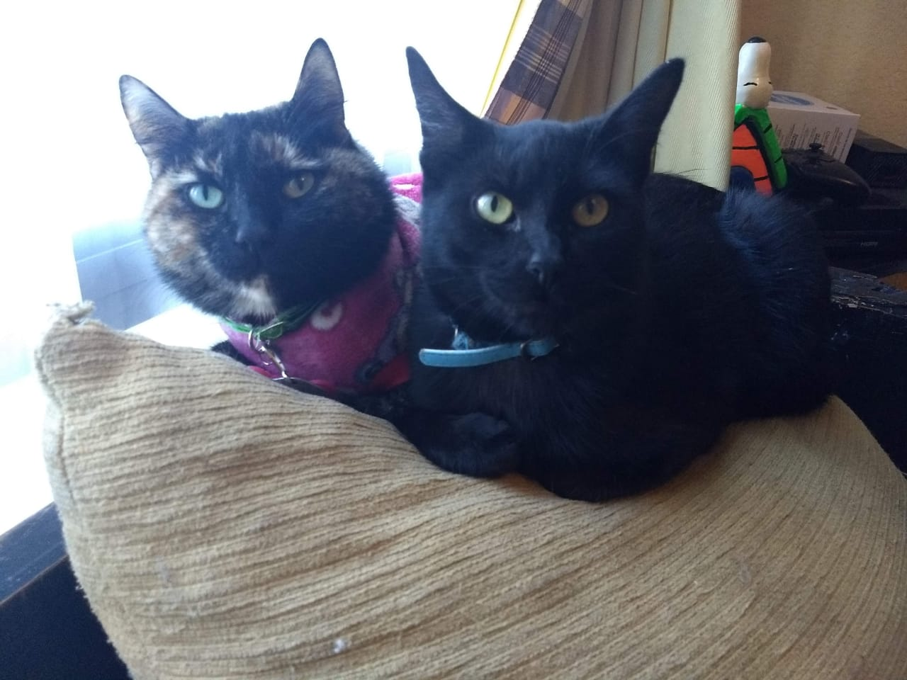

|  | Gizmo y Becker |
Bienvenido conoce un poco más sobre nosotrosGizmo y Becker Hoy conoceremos un poco de Gizmo y becker, ellos son mis gatitos que ambos fueron rescatados por mi , Gizmo es un gato Carey muy tranquila y linda le gusta tomar el sol pero es muy desconfiada y asustadiza , no se deja agarrar por cualquiera y le da miedo todo. Becker es un gatito negro que le gusta irse de vago y regresar por las noches, es un gatito muy jugueton y peleonero, tiene una carateriztica muy especial que es que el no maulla el hace un sonido muy bonito y característico Ambos gatos son de Jennifer Atenas Franco Angeles |